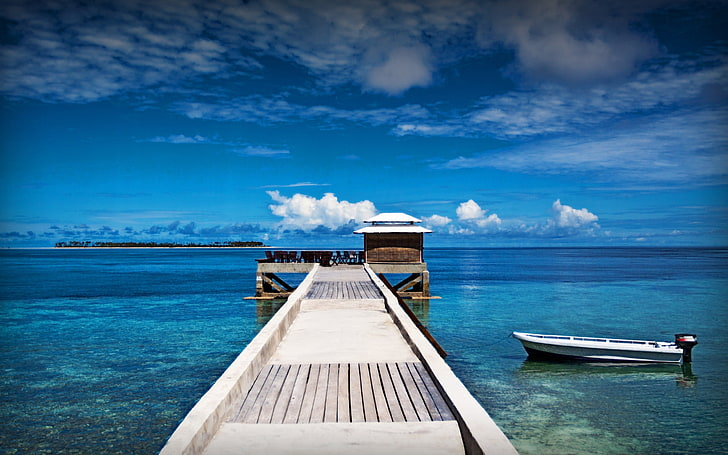

Indonesia memiliki banyak objek wisata yang eksotis dan bahkan
menjadi destinasi wisata dunia. Keindahan wisata alam Indonesia
banyak memikat turis mancanegara datang hingga ke pelosok
Indonesia.
Wisata Terkenal di Indonesia
Pura Besakih
Pura Agung Besakih adalah pura terbesar dan termegah di Bali. Pulau ini terletak di Desa Besakih, Kecamatan Rendang, berada di lereng sebelah barat daya Gunung Agung, gunung tertinggi di Bali.
Pulau Dewata, Bali
Kepulauan Derawan
Kepulauan Derawan adalah sebuah kepulauan yang berada di Kabupaten Berau, Kalimantan Timur. Di kepulauan ini terdapat sejumlah objek wisata bahari menawan, salah satunya Taman Bawah Laut yang diminati wisatawan mancanegara terutama para penyelam kelas dunia.
Kalimantan Timur
Danau Toba
Danau dengan keindahan yang tidak tertandingi ini merupakan danau vulkanik terbesar di Asia Tenggara dan terbesar kedua di dunia setelah Danau Victoria.
Sumatera Utara, Medan
Nusa Penida
Salah satu objek wisata di Bali yang populer di mata dunia saat ini adalah Nusa Penida. Tempat wisata Indonesia favorit ini adalah pilihan tepat untuk Toppers yang suka melakukan Island Hoping, dan menikmati keindahan bawah laut dengan snorkeling.
Bali

Wakatobi
Wakatobi juga merupakan salah satu tujuan wisata bawah laut yang populer dan mendunia.
Dengan luas mencapai 13.900 km2, tujuan wisata terkenal asal Indonesia ini memiliki tak kurang dari 112 jenis terumbu karang yang bersimbiosis dengan ikan-ikan bawah laut sehingga menciptakan panorama bawah laut yang tiada tanding.
Sulawesi
Gunung Bromo
Salah satu gunung berapi yang masih aktif ini memiliki pesona khas berupa gurun pasir yang sangat luat.
Meskipun bukan salah satu gunung tertinggi di Indonesia, namun keindahan Gunung Bromo tidak ada duanya dan membuat para pengunjung dapat merasakan pemandangan yang fantastis dan spektakuler.
Wisatawan dapat berkuda dan mendaki gunung bromo untuk menikmati keindahan yang menawan saat matahari terbit dan terbenam.
Probolinggo
Galeri Foto
Galeri foto ini berisi foto-foto indah dari Wisata-wisata yang ada dari berbagai Kota atau Daerah di Indonesia.